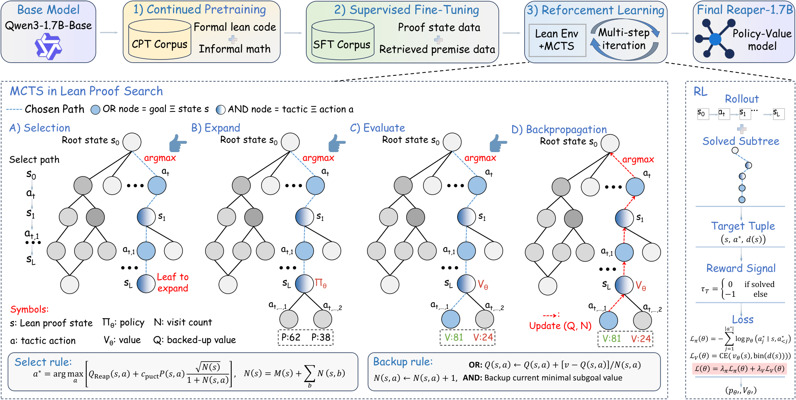

Implements policy-value-guided MCTS proof search as a Lean 4 tactic via Lean metaprogramming, then trains and evaluates a 1.7B prover on Lean benchmarks.
Abstract
We present Reap, an open framework for learning and analyzing formal proof search in Lean4. Reap implements policy-value-guided Monte Carlo Tree Search directly in Lean, sharing proof-state transitions, AND-OR search, and replay verification between inference and training rollouts. Structured action logs expose how neural predictions and tactic execution interact during search. Using this framework, we train Reaper-1, a 1.7B-parameter policy-value model, through continued pre-training, supervised tactic learning, and iterative search-based reinforcement learning. Using a separate premise selector, the final system solves 79.9% of miniF2F-test at pass@32, establishing state-of-the-art performance among open provers of comparable size while remaining competitive with substantially larger models. Beyond improved solve rates, our results suggest that RL strengthens the prover's ability to organize proofs around useful intermediate results, favoring substantial advances over repeated local adjustments. This more directed proof construction is accompanied by increasingly elaborate tactic programs: fewer explicit search decisions are needed, while more work is performed within each decision. The resulting trade-off between search effort and tactic execution cost provides insight into how learning changes the prover's problem-solving strategy.
Problem
Recent high-performing neural provers are hard to study because their implementations are inaccessible or need heavy compute. It is unclear how training changes the mechanism of proof search, beyond solve rates.
Approach
Reap runs policy-value-guided Monte Carlo Tree Search with AND-OR search directly inside Lean 4's tactic monad. It uses native proof-state save/restore, proof reconstruction, replay verification, and structured action logs. Neural policy and value predictions are served externally. The same tactic serves as the inference engine and as the RL rollout engine. Using the Scythe-rl pipeline, the authors train Reaper-1, a 1.7B policy-value model, in three stages: continued pre-training, supervised tactic learning, and iterative MCTS-based RL with a separate premise selector.

Figure 2: Overview of Reap’s training pipeline and Lean-native MCTS. In the backup rule, OR/AND labels refer to the successor node’s type. Both Q(s,a) and the return v account for the edge cost: one for tactic edges and zero for synthetic focus edges. Here, M(s) counts direct policy–value evaluations.
Results
Reaper-1 solves 79.9% of miniF2F-test at pass@32, the best among open provers of comparable size, and is also evaluated on ProofNet, FATE-M, PutnamBench and CombiBench. Over RL stages, proofs get shorter and search trees smaller, while individual tactic actions grow more elaborate and slower to execute.
Metric
SFT
RL4
RL5
Pass@32
62.3%
78.3%
79.9%
Mean proof steps
21.7
11.2
5.2
Mean search-tree nodes
2,368
162
119
Median evaluation latency (ms)
12.0
15.2
43.2
Search and proof statistics across training stages (miniF2F-test)